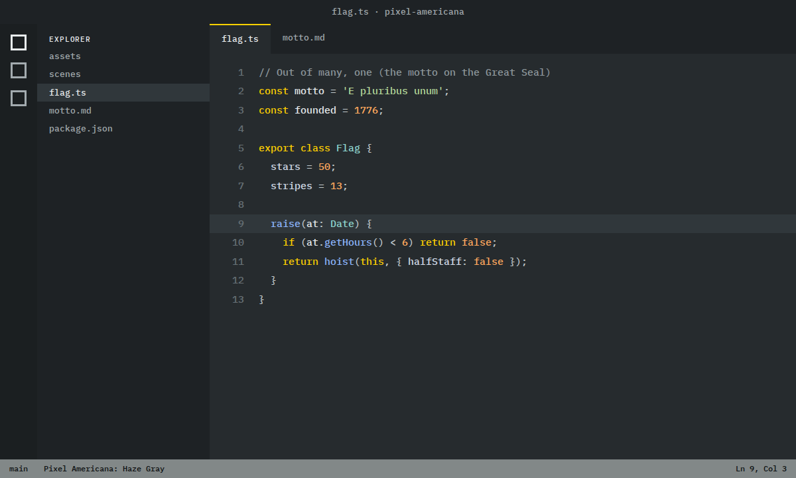
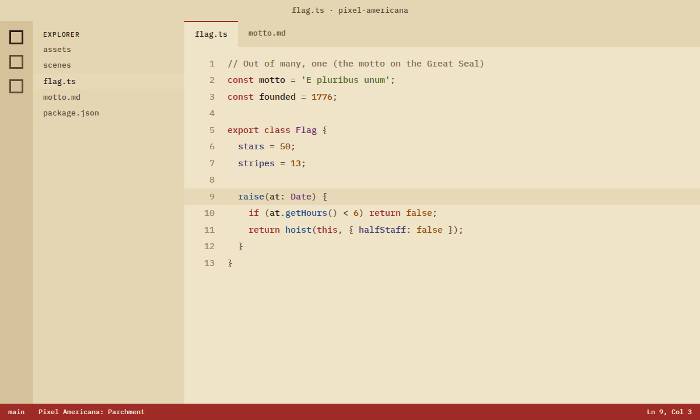

The sets
Pick a scene. Get the whole set.
Every scene comes as a browser theme for Chrome-family browsers and Firefox, desktop wallpapers (HD and 4K) and a phone wallpaper, with colors taken from real American sources where they exist. Hover a scene to see it move.
New tab
Every scene, moving, on every new tab
A clock, a search box and the whole Pixel Americana library, animated. Pick your scene from the gallery and it stays until you change it.
- Scene gallery with categories, search and favorites (press G)
- Flags wave, stars twinkle, the candle flickers, the sea rolls in
- A music player with 13 American recordings from 1913 to 1923. It stays quiet until you press play
- Searches use your browser's own search engine. Motion can be switched off
The web version works everywhere, Safari included: set https://pixelamericana.github.io/newtab/ as your homepage.

On the record player
Real recordings, 1913 to 1923
The New Tab's music is old Edison Diamond Disc recordings, transferred by the UC Santa Barbara Library. US sound recordings published before 1926 are in the public domain (Music Modernization Act), and so are these compositions.
- Semper FidelisNew York Military Band, 1919 · Edison 50671Source
- America (My Country, 'Tis of Thee)New York Military Band, 1914 · Edison 50169Source
- The Stars and Stripes Forever (marimba)Imperial Marimba Band, 1917 · Edison 50466Source
- Battle Hymn of the RepublicThomas Chalmers, baritone, 1917 · Edison 82133Source
- El Capitan MarchNew York Military Band, 1921 · Edison 50748Source
- Silver Threads Among the Gold (piano)Ernest L. Stevens, piano, 1922 · Edison 51124Source
- Black and White RagNew York Military Band, 1913 · Edison 50116Source
- Over ThereBilly Murray, 1917 · Edison 50443Source
- The Washington Post MarchUnited States Marine Band, 1923 · Edison 51377Source
- Beautiful Ohio WaltzJaudas' Society Orchestra, 1918 · Edison 50511Source
- On the Village GreenFred Van Eps, banjo, 1923 · Edison 51480Source
- The Liberty Bell MarchNew York Military Band, 1917 · Edison 50636Source
- Hail, ColumbiaNew York Military Band, 1914 · Edison 50169Source
Emoji & stickers
24 pixel stickers for your group chats
Symbols, reactions and Americana, with 11 animated. Each download is already sized and formatted for that app, with a README that walks you through adding them.
Symbols
 Old Glory
Old Glory Bald Eagle
Bald Eagle Liberty Bell
Liberty Bell Lady Liberty
Lady Liberty The Capitol
The Capitol Star
Star Fireworks
Fireworks Uncle Sam Hat
Uncle Sam Hat
Reactions
- Salute
 Eagle Side-Eye
Eagle Side-Eye Huzzah
Huzzah 1776
1776 Coiled Snake
Coiled Snake Flag Heart
Flag Heart USA
USA Yes Sir
Yes Sir
Americana
 Apple Pie
Apple Pie Hot Dog
Hot Dog Baseball
Baseball Cowboy Hat
Cowboy Hat Diner Coffee
Diner Coffee Cheeseburger
Cheeseburger Milkshake
Milkshake Route 66
Route 66
- Discord & SlackCustom emoji, 128 px. GIFs for the moving ones.Download zip
- TelegramSticker packs via @Stickers. Animated ones are video stickers.Download zip
- WhatsAppImport with a free sticker-maker app.Download zip
- SignalUpload from Signal Desktop. Animated ones move.Download zip
- Anywhere elsePNG + GIF for iMessage, Notion, docs, stories.Download zip
VS Code
3 sets for your code editor
Old Glory, Haze Gray, Parchment as Visual Studio Code color themes. Every code color has at least 4.5:1 contrast with the background (WCAG AA), comments at least 3:1.
 Old GloryDark
Old GloryDark
Haze GrayDark / neutral
ParchmentLight
In VS Code: Extensions view, … menu, Install from VSIX…, pick the file, then run Preferences: Color Theme. Also works in Cursor and VSCodium.
Install
About a minute, start to finish
- Download the New Tab or a set's browser theme. Unzip it and move the folder somewhere it can stay (not Downloads).
- Go to
chrome://extensions(edge://extensionsin Edge) and switch on Developer mode. - Click Load unpacked and choose the folder.
- Open a new tab. If the browser asks whether to keep the change, choose Keep it. The New Tab and a theme can run together.
The browser keeps one theme at a time, so loading another replaces it. To undo a theme: chrome://settings/appearance › Reset. One-click installs from the Chrome Web Store are coming.
- Download the Firefox version of the New Tab or a theme.
- Go to
about:debugging› This Firefox › Load Temporary Add-on. - Pick the zip (or
manifest.jsoninside it). It stays until Firefox restarts.
Firefox only installs add-ons permanently once Mozilla has signed them. Signed one-click versions are on the way; they'll replace these files here.
- Safari has no browser themes, but the New Tab works as a web page.
- Safari › Settings › General: set New windows open with and New tabs open with to Homepage.
- Set the homepage to
https://pixelamericana.github.io/newtab/. Wallpapers and stickers work on any Mac or iPhone.


{kind=link}
{kind=link}
{kind=link}
{kind=link}
{kind=link}
{kind=link}
{kind=link}
{kind=link}
{kind=link}
{kind=link}
{kind=link}
{kind=link}
{kind=link}
{kind=link}
{kind=link}
{kind=link}
{kind=link}
{kind=link}